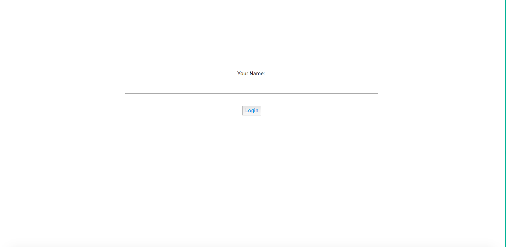
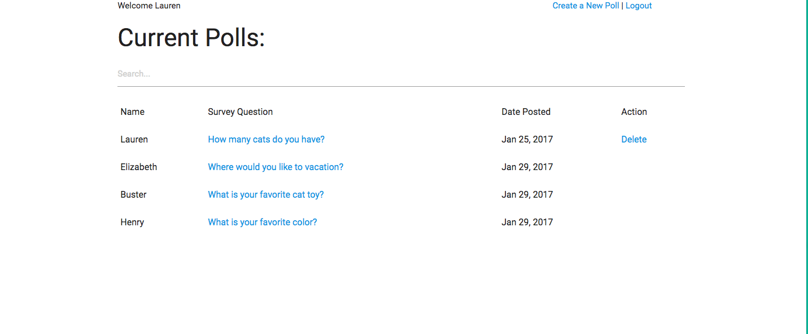
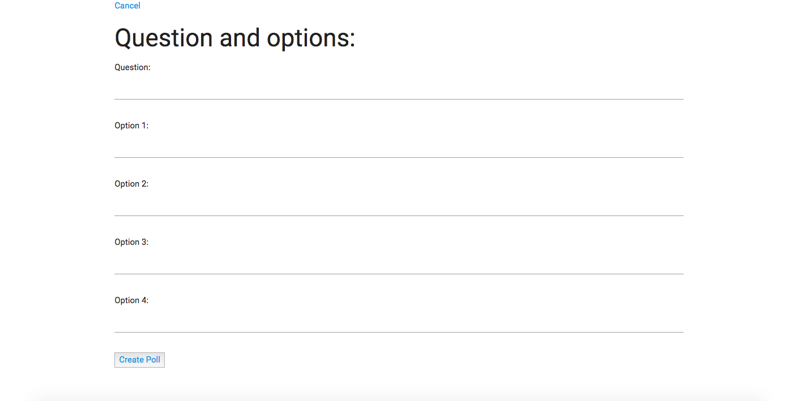
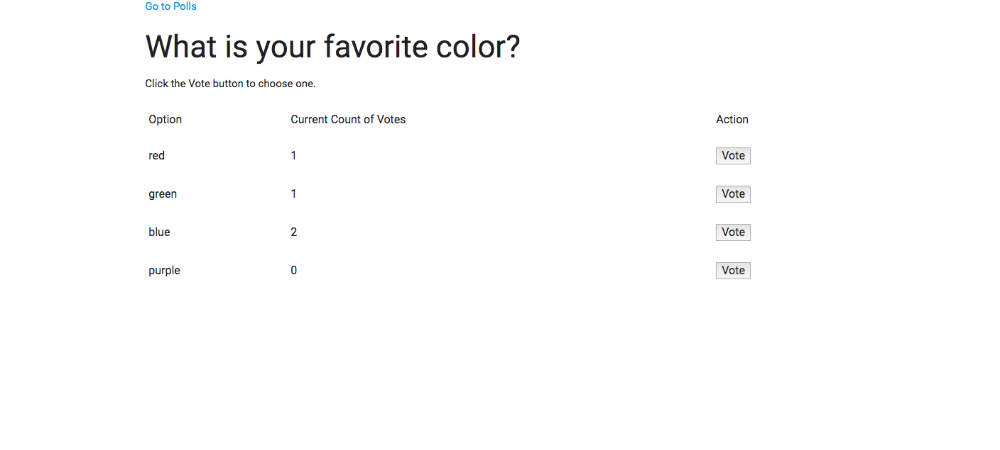

Login Page
A user must login with thier name to enter.

Dashboard
The dashboard page allows users to see all the polls that have been created. In adddion users can filter by searching for specific polls and delete only the polls they have created.

Create a New Poll
Upon clicking on create a new poll, users can create a unique poll with a questions and four options for other users to vote on.

Previous
Next
Voting
Upon clicking on a specific poll, users can vote for their an option that suits their linking.